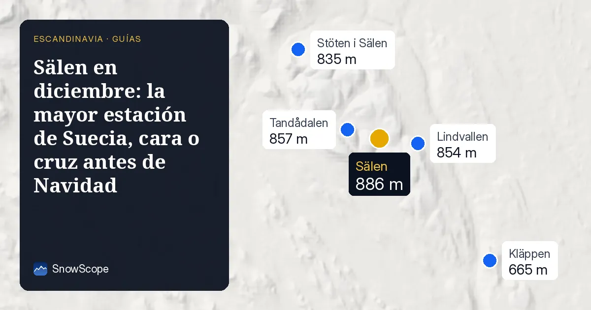

Sälen en diciembre: la mayor estación de Suecia, cara o cruz antes de Navidad
En Sälen aprende a esquiar buena parte de Suecia: 80 km de pistas cartografiadas y 96 remontes repartidos por colinas bajas y redondeadas. Para diciembre, nuestros 46 inviernos de histórico son claros. Un 15 de diciembre típico, la zona tiene 28 cm, y la semana del 15 al 21 de diciembre solo el 48 % de los inviernos tenía 30 cm o más.
Consulta la previsión de nieve en tiempo real de Sälen en la app SnowScopeEspesor de nieve, alertas de nieve polvo y mapa 3D, gratis.
Diciembre, antes y ahora
Los remontes de Sälen van de 568 m a 886 m, y las colinas son tan suaves que nuestro histórico da un solo valor para toda la zona. Ese valor ha bajado: la media de diciembre pasó de 33 cm en los primeros 15 inviernos a 24 cm en los últimos 15, y la parte de semanas de Navidad con 30 cm cayó del 80 % al 47 %.
El invierno pasado fue un ejemplo claro: 16 cm el 15 de diciembre y 4 cm el 24 de diciembre.


Las semanas que aún cumplen
La semana de Navidad es la mejor apuesta, con el 61 % de los inviernos a 30 cm o más. Antes, las probabilidades son del 35 % en cada una de las dos primeras semanas y del 48 % del 15 al 21 de diciembre. El primer día habitual con 30 cm es el 17 de diciembre, justo antes de las vacaciones.
Sälen nunca es profundo en diciembre (solo el 11 % de las semanas de Navidad tenía 60 cm o más), pero rara vez está pelado: en ninguno de nuestros 46 inviernos el suelo estaba sin nieve el 15 de diciembre. Sin el trabajo de la estación en las pistas, eso sí, una capa fina es la imagen normal de diciembre.
El precio de la semana
Los forfaits de Sälen se venden a precio dinámico en la tienda oficial en línea del operador. El 13 de noviembre de 2026 no pudimos leer un importe fijo en la página oficial, así que no damos ninguno. El precio variará según tus fechas; compra pronto y en línea.
Trysil en los mismos años
Trysil, justo al otro lado de la frontera noruega, es la mejor opción de diciembre cerca. Su media montaña (758 m) tiene 44 cm un 15 de diciembre típico, y el 83 % de los inviernos tenía allí 30 cm la semana del 15 al 21 de diciembre. Su cima a 1109 m está más alta que cualquier punto de Sälen.
Trysil también ha perdido nieve con los años, pero desde un nivel más alto: en Navidad, el 80 % de los últimos 15 inviernos aún tenía 30 cm a media montaña.
Consejos para reservar
Si te gusta Sälen por su ambiente familiar, ve a finales de diciembre o, mejor, en enero y febrero. Si diciembre es la única opción, mira el parte de nieve en directo de la estación una semana antes, o sigue hasta Trysil.
Consejos para esquiadores
- Elige la semana de Navidad antes que fechas anteriores: el 61 % de nuestros inviernos tenía entonces 30 cm, frente al 35 % a principios de diciembre.
- Reserva algo que puedas cambiar: en los últimos inviernos la parte de buenas semanas de Navidad bajó al 47 %.
- Compara con Trysil antes de pagar: su media montaña tenía 30 cm a mediados de diciembre en el 83 % de los inviernos.
- Días cortos y frío: organiza el esquí en torno a las horas de luz y abriga bien a los niños.
Más mapas (sitios externos)
Referencias y créditos
- Sälen: official lift-pass page of the operator (prices by date; no fixed price quoted), checked 13 November 2026 www.skistar.com/en/winter/skipass/buy-skipass/lift-pass-salen/
- Trysil: official lift-pass page of the operator (prices by date; no fixed price quoted), checked 13 November 2026 www.skistar.com/en/winter/skipass/buy-skipass/lift-pass-trysil/
Sobre estas cifras
Cifras de nieve: histórico de nieve de SnowScope, 46 inviernos pasados (1980-81 a 2025-26) a las alturas de la estación, corregido por altitud (una estimación para una zona, no partes de la estación); «buena nieve» = 30 cm o más en el suelo de media en la semana. Mapa: nuestro espesor habitual el 15 de diciembre repartido sobre el relieve según la altura. Pistas y remontes: cartografía OpenSkiMap. Forfaits: tarifas oficiales de las estaciones, comprobadas el 13 de noviembre de 2026; los precios pueden cambiar.
Boletines oficiales de aludes: Lavinprognoser (Naturvårdsverket)
Citar este informe
Para investigación, docencia o prensa: cifras y gráficos reutilizables libremente bajo CC BY 4.0 con esta cita.
SnowScope (2026), Sälen en diciembre: la mayor estación de Suecia, cara o cruz antes de Navidad, https://snowscope.app/blog/es/2026/11/salen-december-ski-trip-honest-snow-cost.html, consultado el 2026-11-14
SnowScope (Atlas Labs). (2026, November 14). Sälen en diciembre: la mayor estación de Suecia, cara o cruz antes de Navidad. SnowScope snow reports. https://snowscope.app/blog/es/2026/11/salen-december-ski-trip-honest-snow-cost.html
BibTeX
@misc{snowscope2026salendecemberskitriphone,
author = {{SnowScope (Atlas Labs)}},
title = {Sälen en diciembre: la mayor estación de Suecia, cara o cruz antes de Navidad},
year = {2026},
month = nov,
howpublished = {\url{https://snowscope.app/blog/es/2026/11/salen-december-ski-trip-honest-snow-cost.html}},
note = {Published 2026-11-14 19:44 UTC; accessed 2026-11-14}
}· CC BY 4.0 · Métodos, datos y herramientas →
Sälen: nieve y temperatura según la altura, este invierno vs el pasado (herramientas) →
Sigue Sälen
Gratis: un aviso cuando llega la nieve y la previsión cada mañana.
Más partes de nieve

Esquiar en Obertauern en diciembre: 43 cm un 15 de diciembre típico a media montaña y forfait de 6 días a 331 EUR antes de Navidad.

Mt. Baker en diciembre: 46 in (116 cm) de nieve a media montaña en un 15 de diciembre típico, y un forfait de 98,80 $ de lunes a jueves, que solo se vende el mismo día en taquilla.

Montgenèvre tiene 56 cm de nieve habitual en diciembre en su base, dando a los esquiadores de fin de semana una cobertura más profunda que Sestriere al otro lado de la frontera.